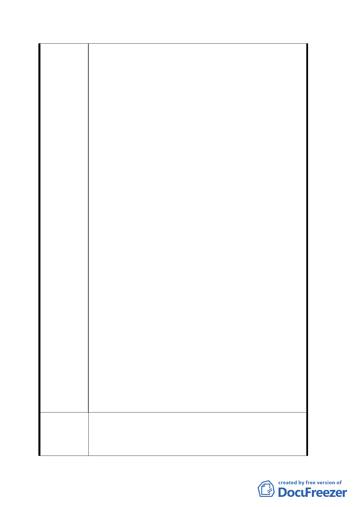

五、查立法院 93 年 4 月第五會期第十三次審議「大眾捷運
法部分條文修正草案」會議，行政院提出說明：『協議
價購方式取得開發所需土地，應包括公、私有土地，此
係考量公營事業單位本身財務狀況，或可採「讓售」方
式提供主管機關以「價購」取得該公有土地，以保留該
公營事業單位未來得享有承租或承購該土地開發建築
物，並依優惠辦法條件優先辦理』之機制，本局於 94
年 4 月 7 日交通部召開研商「大眾捷運系統土地開發辦
法」修正草案會議上引據前述說明獲致共識，基此，貴
我雙方合作土地開發首應符合大眾捷運法、大眾捷運系
統土地開發辦法立法之意旨作為協商基礎，籲請貴府捷
運局應遵行於爭取「機場捷運線」主辦權時對交通部所
提之互利共榮之訴求。
六、鑑於本特定區（Ｅ及Ｄ１區）長期以來未有完善之都
市計畫，致十餘年來都市景觀窳陋及發展停滯，行政院
於 93 年 11 月 11 日院臺文字第 0930049372 函示交通部
「觀光客倍增計畫-重要交通門戶環境改善專案計畫
案」：『「臺北車站特定專用區環境改善計畫-臺北車站為
臺北市最重要之交通節點，為處理本地區之都市景觀及
交通問題，應優先從都市計畫及都市設計進行整體規劃
著手，故建議本計畫除「周邊交通機能整合計畫」外其
餘各項計畫均先暫緩辦理……」』，另交通部亦於 94 年
6 月 2 日函貴府：「因事涉雙方土地權利與義務，請北
市府妥善協調並優先考量臺鐵權益下辦理相關後續事
宜」等語，貴府不應漠視行政院及交通部之指示，以免
造成本特定區四分五裂之憾事。
七、「臺北車站特定專用區」目前進行規劃之公共建設包含
臺北捷運系統松山線、機場捷運系統、國家門戶計畫、
臺灣博物館系統及舊總局古蹟保存活化等計畫，均涉及
本局經管之 D、E 土地，「機場聯外捷運系統」僅其中一
環，但國家重大交通建設本局當配合辦理，惟請將本局
應得之權益在貴我協商達成共識後併入都市計畫整體
規劃再辦理後續作業。以免滋生爭議，影響國家重大交
通建設。
一、不同意逕將本局經管之一般商業用地（D1）自行切割
建議辦法
擬變更為聯合開發區（捷）。
二、有關 D1（東半街廓）在土地取得方式未確定之前，本
局不同意捷運局逕行決定於計畫公告實施後編列年度
六